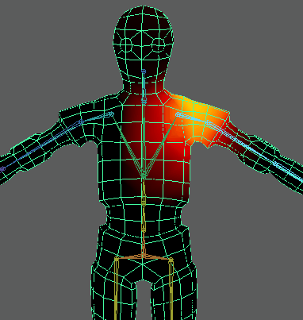

您可以使用绘制蒙皮权重(Paint Skin Weights)工具在选定骨架关节上查看蒙皮绑定的强度或影响。这有助于隔离蒙皮与骨架的绑定太强或太弱时所出现的各种问题。
- 对于场景中的蒙皮网格，打开绘制蒙皮权重(Paint Skin Weights)工具。（在“动画”(Animation)菜单集中，“蒙皮 > 绘制蒙皮权重工具”(Skin > Paint Skin Weights Tool) >
 。）
。）
- 在“渐变”(Gradient)区域中，启用“使用颜色渐变”(Use Color Ramp)，然后选择颜色预设帮助识别绑定效果最强和最弱的区域。
- 选择网格。
网格上将显示用于描述绑定影响的渐变。
- 在骨架中的每个关节上单击鼠标右键，然后从菜单中选择“选择影响”(Select Influence)以显示每个关节的绑定强度。
